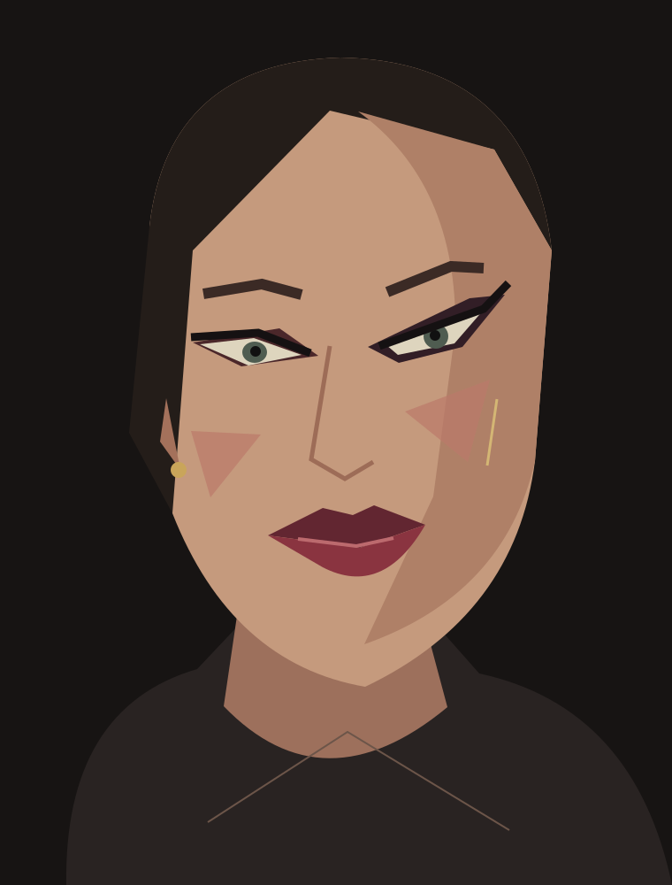

BEAUTY STUDY Nº 01 / ORIGINAL ILLUSTRATIONMAKEUP ARTIST · LONDON & INTERNATIONAL
Art
on Skin.
Editorial. Bridal. Commercial. Film.
Makeup designed to be seen,
photographed and remembered.
Fictional artist concept · Illustrated portfolio studies
A STUDY IN COLOUR, LIGHT & INTENTION
Selected Work.
Original vector concept studies, not photographs of clients or commissioned work.
A LOOK THAT BELONGS TO THE MOMENT
What I Offer.
Illustrative starting prices from the brief. Final scope, travel, timings and suitability require agreement. Selecting a row fills your local project brief.
THE ARTIST · A FICTIONAL PERSONA
Considered.
Expressive.
Always individual.
“Makeup is the one art form that disappears at the end of the day — which means every application is its own original.”
Ariel Beaumont is imagined as a London-based artist working across editorial, film and bridal. An eye for detail, a thoughtful consultation and a look created for its context sit at the heart of this concept.
Training, years of experience and named clients in the original brief are unverified. No London College of Fashion, Vogue or BBC affiliation is claimed.
The possibility.ORIGINAL STUDIO STILL LIFE
ILLUSTRATIVE CREATIVE VOICES
“A look that felt entirely like me, only with a little more courage.”FICTIONAL BRIDAL CONCEPT
“Colour with a point of view, and detail that rewards a closer look.”FICTIONAL EDITORIAL CONCEPT
“Thoughtful preparation, from the first moodboard to the final touch.”FICTIONAL COMMERCIAL CONCEPT
Sample creative copy, not real testimonials or client endorsements.
BEFORE WE BEGIN
A few details.
Do you travel for bookings?
The brief proposes nationwide travel from London. Travel, accommodation and timing would need to be agreed in a real quote; no availability is connected here.
How far in advance should I enquire for a wedding?
Enquiring early gives more time to discuss the day and a trial. This demonstration cannot check a date or hold a booking.
What’s included in a bridal trial?
A proposed trial explores the look, timing and preferences. Product suitability and any sensitivities should be discussed directly with the actual artist; do not enter medical information here.
Do you work internationally?
International work is part of the concept. Travel requirements, permissions, costs and availability would need confirmation for each project.
YOUR VISION. OUR STARTING POINT.
Let’s Make
Something
Beautiful.
Every project starts with a conversation.
Tell the local planner what you’re creating.
London · Nationwide & international concept
No enquiry is sent. No session or date is held.